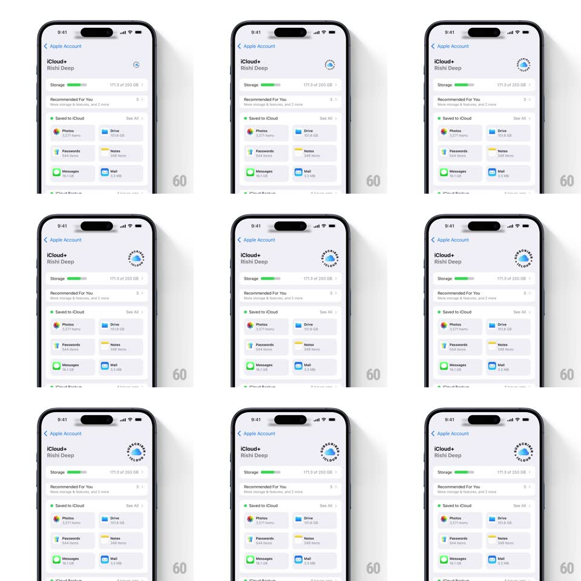

Media
Frame-by-frame

Rebuild this interaction 1:1: the iCloud+ subscriber badge in Apple Account settings - a small circular emblem beside the user's name with "SUBSCRIBED" and "iCLOUD+" typeset on a circular path around a cloud glyph, rotating slowly and continuously.

Rebuild this interaction 1:1: the iCloud+ subscriber badge in Apple Account settings - a small circular emblem beside the user's name with "SUBSCRIBED" and "iCLOUD+" typeset on a circular path around a cloud glyph, rotating slowly and continuously.
## Integration
Integration: stack-agnostic spec - springs given as stiffness/damping, timed motions as duration + curve; map every value to your framework and animation library of choice.
## Scene
Settings > Apple Account screen (iCloud+ header, user name, storage bar, Saved to iCloud grid). At the right end of the name row: the circular badge (~36pt), dark text ring around a filled iCloud cloud icon.
## Motion spec
Pattern: perpetual circular-text rotation.
- The entire badge rotates clockwise at a constant ~20s per revolution, linear, seamless, forever - no easing, no pause.
- Text on the ring reads upright along the path ("SUBSCRIBED" top arc, "iCLOUD+" bottom arc) and rotates with the badge; the cloud center glyph can counter-rotate to stay upright or rotate with it - pick one and keep it constant.
- Entrance (first appearance on the screen): badge scales in (0.6 -> 1, spring ~360/22, ~350ms) once, then rotation begins.
## Calibration
- The rotation must be perfectly constant-speed - any easing reads as a stutter.
- Small enough to be a seal, not a spinner: ~36pt, thin letterforms.
## Reduced motion
Badge is static; no rotation.
## Don't miss
- The badge sits inline with the name row, not in the navigation bar.
- The cloud glyph is the standard iCloud cloud, filled blue-white.